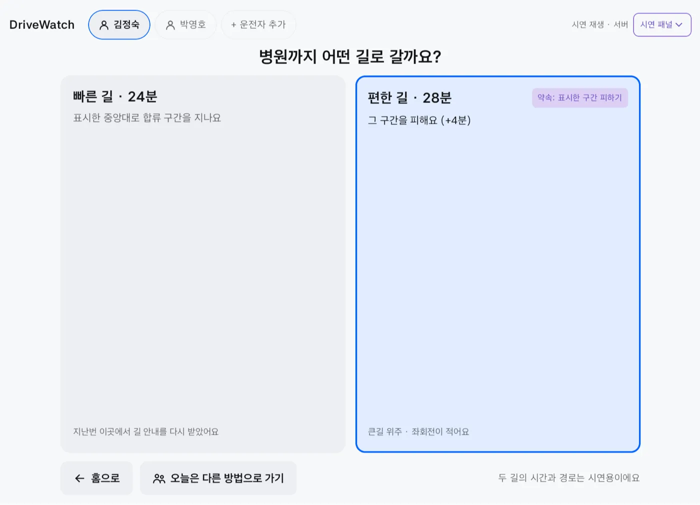
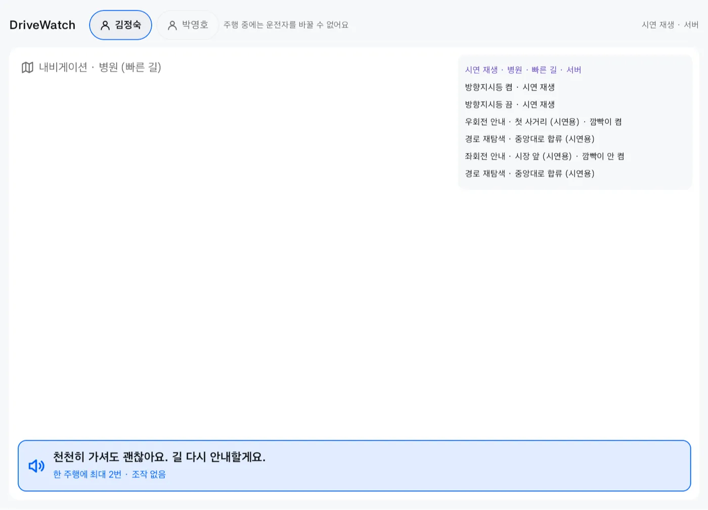
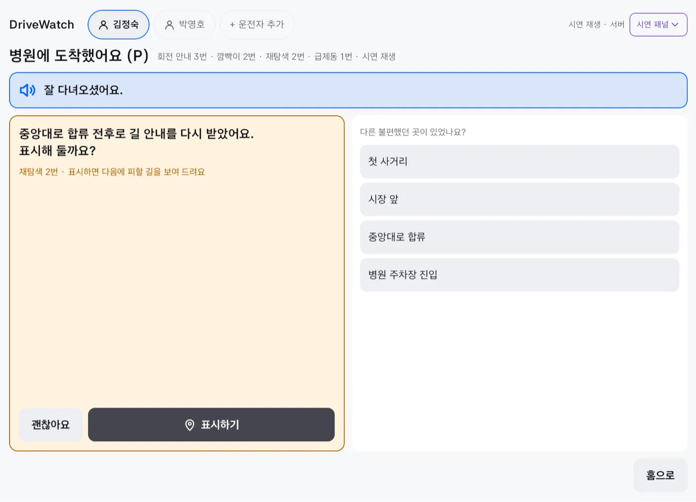
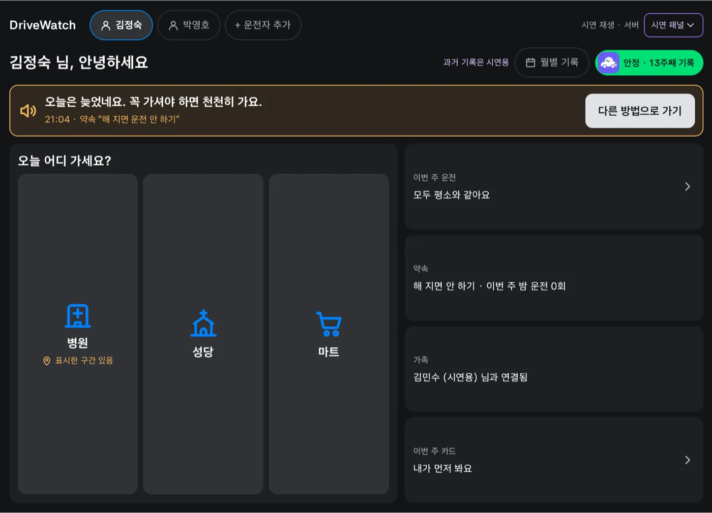
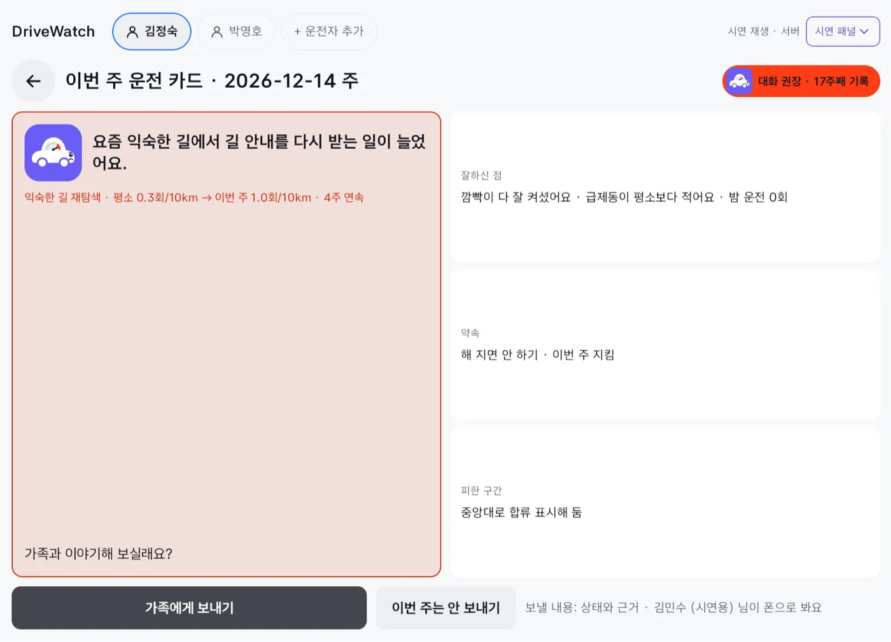
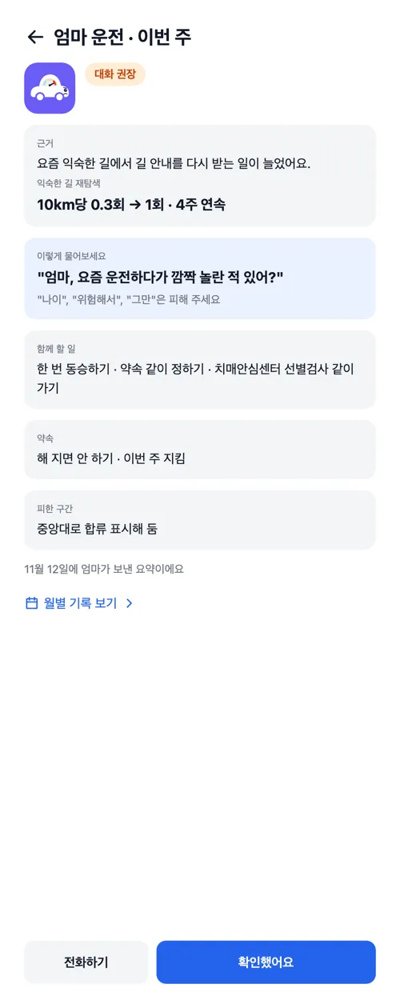
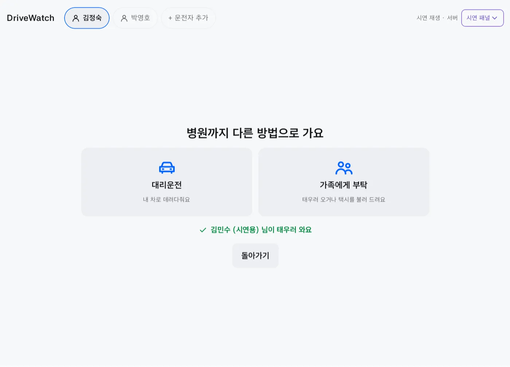
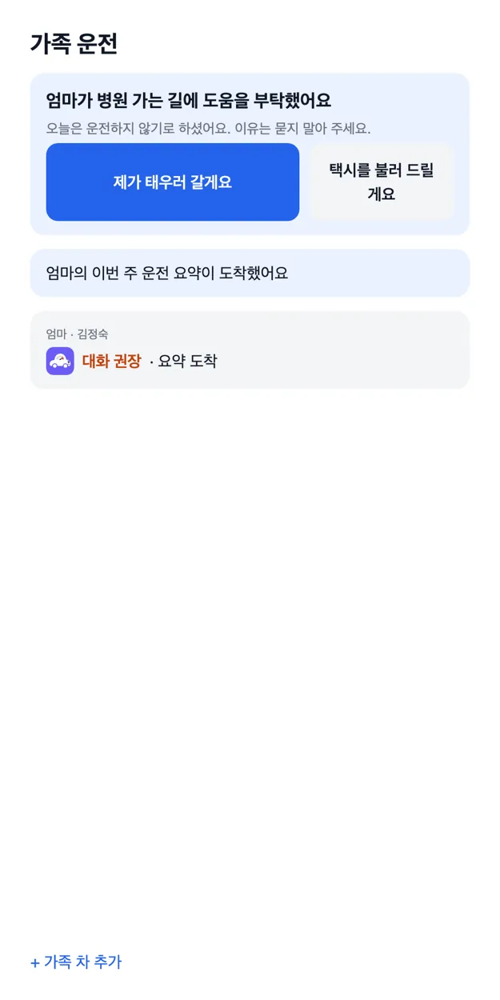
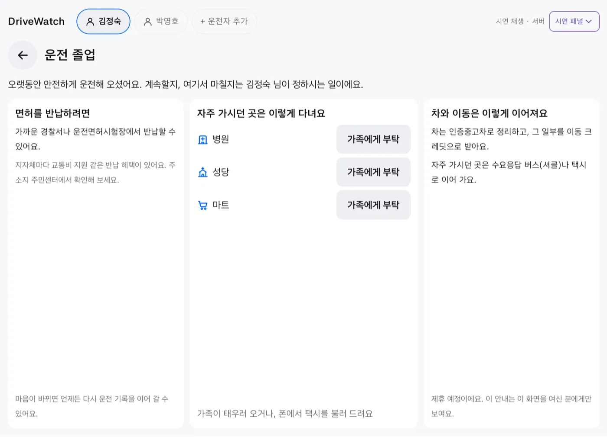

부모님 운전에 차는 스마트워치
“엄마, 이제 운전 그만하면 안 돼?” “엄마, 요즘 운전하다가 깜짝 놀란 적 있어?”
같은 걱정인데 첫마디가 달라요. DriveWatch는 부모님 운전을 나이가 아니라 본인의 평소와 비교하는 Pleos 차량 앱이에요. 가족은 다그치는 대신 근거를 들고 물어볼 수 있어요.
교통사고는 줄고 있어요.
고령 운전자 사고만 빼고요.
- 전체 교통사고
- −4.5%2021 → 2025
- 65세 이상 운전자 사고
- +44.1%31,841건 → 45,873건
- 전체 사고 가운데 비중
- 23.7%네 건 중 한 건 가까이 (2025)
면허 갱신 검사는 3~5년에 한 번이에요. 그사이 운전이 어떻게 달라지는지는 본인도 가족도 몰라요. 알게 되더라도 계속 운전과 면허 반납 사이에 고를 수 있는 게 없어요.
출처: TAAS 교통사고분석시스템, 고령 운전자 교통사고 5개년 통계
나이가 아니라,
평소와 비교해요.
기준은 부모님 본인의 최근 8주예요. 모두에게 같은 점수를 매기지 않아요. 같은 사람이 예전과 달라졌는지만 봐요.
-
처음 12주
먼저 평소를 배워요.
이 기간에는 판정하지 않아요. 깜빡이를 켜는지, 늘 가던 길에서 길 안내를 다시 받는지, 급제동이 얼마나 되는지 주마다 쌓아 둬요.
-
평소대로라면
안정.
주차하면 칭찬부터 해요. “잘 다녀오셨어요. 오늘 깜빡이 다 잘 켜셨어요.”
-
한 주만 튀면
넘겨요.
낯선 길이었을 수도 있고, 컨디션이 안 좋은 날이었을 수도 있어요. 하루 서툴렀다고 상태가 바뀌지 않아요.
-
2주 이어지면
관찰.
같은 지표가 평소의 1.5배를 넘는 주가 두 번 이어지면 그때 변화로 봐요. 이렇게 판정한 주는 평소 기준에서 빼요. 오래 이어진 변화가 어느새 ‘평소’가 되지 않게요.
-
4주 이어지거나 두 지표가 함께 나빠지면
대화 권장.
이때도 부모님 화면에 먼저 떠요. “요즘 익숙한 길에서 길 안내를 다시 받는 일이 늘었어요.” 진단은 하지 않아요. 치매를 감지하는 앱이 아니라 변화를 알려 주는 앱이에요.
폰은 모르고,
차는 아는 것.
휴대폰 운전 점수는 가속도 센서로 짐작해요. DriveWatch는 차가 직접 보내는 신호를 읽어요.
-
방향지시등
깜빡이를 켰는지
폰: 알 수 없어요회전 안내 앞뒤 3초 안에 켰는지 맞춰 봐요.
-
브레이크 · 차속
급제동
폰: 흔들림으로 짐작해요브레이크를 밟은 채 1초 사이에 속도가 크게 줄면, 한 번 밟을 때 한 번만 세요.
-
기어
언제 출발하고 도착했는지
폰: 앱을 켜고 꺼야 해요D로 바꾸면 기록을 시작하고 P에서 마쳐요.
-
운전자 프로필
누가 운전했는지
폰: 폰 주인이라고 가정해요차에서 운전자를 고르고, 기록도 운전자마다 따로 둬요.
기어, 방향지시등, 브레이크, 차속은 Pleos Connect 에뮬레이터 v2.1.0에서 실제 차량 신호로 받았어요. 실차에서는 아직 확인하지 않았어요.
병원 가는 날,
차 안에서.
같은 앱이 기어에 따라 다르게 움직여요. 서 있을 때는 묻고, 달릴 때는 조용히 기록해요.

출발 전지난번에 표시한 구간이 있으면 빠른 길과 그 구간을 피하는 편한 길을 나란히 보여 드려요.

달리는 동안화면은 내비에게 양보해요. 기록은 뒤에서 하고, 꼭 필요할 때만 짧게 말해요. 한 번 주행에 두 번까지예요.

도착하면“잘 다녀오셨어요.” 길 안내를 다시 받은 곳을 짚고, 다음에 피할 수 있게 표시해 둘지 여쭤봐요.

해가 진 뒤스스로 정한 약속이 있으면 한 번만 말해요. “오늘은 늦었네요. 꼭 가셔야 하면 천천히 가요.” 출발을 막지는 않아요.

한 주가 끝나면이번 주 운전 카드가 떠요. 잘하신 점, 지킨 약속, 피한 구간이 먼저 나오고, 보낼지는 부모님이 정해요.
Pleos Connect 에뮬레이터에서 찍은 실제 앱 화면이에요. 내비 안내와 두 길의 시간은 내비 연결 전이라 시연용이고, 화면에도 그렇게 표시해요.
부모님이 먼저 보고,
보내기로 한 것만 가요.
자녀는 앱을 깔지 않아요. 부모님이 차에서 띄운 QR이나 코드로 연결하고, 폰 브라우저로 요약을 받아요. 코드를 띄우는 사람이 부모님이라 연결 자체가 동의예요.

“엄마, 요즘 운전하다가
깜짝 놀란 적 있어?”
맨 처음 문장, 여기 들어 있어요. 대화 권장일 때 자녀 폰에는 근거와 함께 말을 꺼내는 방법이 와요. 결론이 아니라 질문으로 시작하고, ‘나이’, ‘위험해서’, ‘그만’ 같은 말은 피하게 해요. 한 번 같이 타 보기, 약속 같이 정하기, 선별검사 같이 가기처럼 함께 할 일도 알려 드려요.
가족에게 가지 않는 것
- 실시간 위치
- 지나온 경로
- 운전한 시각
서버는 이 셋을 아예 받지 않아요. 부모님이 ‘상태만’을 고르면 숫자로 된 근거도 차 밖으로 나가지 않아요. 이번 주는 안 보내기도 언제든 고를 수 있어요.
운전 안 하는 날엔,
가족에게 부탁.
차에서는 대리, 폰에서는 택시. 차 안에는 차와 함께 갈 수 있는 방법만 둬요.

- 부모님이 차에서 ‘가족에게 부탁’을 눌러요. 이유는 묻지 않고, 목적지 이름만 보내요.
- 가족 폰에 카드가 떠요. “엄마가 병원 가는 길에 도움을 부탁했어요.”
- 가족이 답하면 차 화면에 바로 나와요. “제가 태우러 갈게요” 아니면 “택시를 불러 드릴게요.”
택시는 가족이 자기 폰으로 불러요. 차에서 택시를 부르면 차를 두고 내려야 하니까요. 먼저 답한 한 사람이 맡아요.


그만두라고 하지 않아요.
정하는 건 부모님이에요.
운전 졸업 안내는 부모님이 직접 열었을 때만 보여요. 면허 반납 방법을 알려 드리고, 자주 가시던 곳마다 가족에게 부탁할 수 있게 해요. 반납을 권하지는 않아요.
가족에게 부탁은 실제 서버로 동작해요. 대리운전 호출은 제휴 전이라 시연용이에요.
어르신 앱이 아니에요.
평소와 비교하는 엔진 위에 어르신 팩을 얹은 앱이에요. 팩은 무엇을 기록할지, 어떤 약속을 고를 수 있는지, 가족에게 어떤 말을 건넬지를 묶은 단위예요. 팩만 바꾸면 다른 운전자에게도 쓸 수 있어요.
- 지금
어르신 팩
익숙한 길 재탐색, 깜빡이, 급제동, 밤 운전
해 지면 운전 안 하기
- 다음
초보 팩
깜빡이, 급제동, 급가속, 밤 운전
고속도로는 동승할 때만
- 다음
복귀 팩
어르신 팩과 같은 신호, 더 짧은 기준 기간
가까운 곳부터
- 다음
장거리·법인 팩
쉬지 않고 운전한 시간, 급제동, 밤 운전
2시간마다 쉬기
팩이 달라도 원칙은 같아요. 본인이 동의하고, 본인이 먼저 보고, 보낼 범위도 본인이 정해요.
안전에 필요한 건 무료.
‘대화 권장’ 같은 상태를 돈을 내야 볼 수 있게 막지 않아요. 비용은 가족이 함께 대응하는 일에만 받아요.
무료
0원
- 운전자 본인: 판정, 생활길, 약속, 주간 카드 전부
- 가족 1명, 주간 상태(안정·관찰·대화 권장)
- 최근 8주 기록
가족 구독
월 4,900원가격 실험안
- 가족 최대 4명, 형제끼리 나눠 내기
- 근거 카드, 대화 가이드, “이야기 나눴어요” 기록
- 2년 치 월별 흐름, 진료·상담 때 보여 줄 12주 리포트
처음 12주는 무료예요. 엔진이 평소를 배우는 기간이라 판정이 없어요. 첫 판정이 나오는 13주 차에 근거와 대화 가이드를 제안해요.
운전 변화 판정은 영업에 쓰지 않아요. ‘대화 권장이 뜬 고객’ 명단은 누구에게도 넘기지 않아요. 근거를 보낼지는 구독과 상관없이 본인이 정해요.
어디까지 됐나요?
된 것과 시연용, 아직 안 된 것을 나눠 적었어요.
에뮬레이터에서 확인
- 기어, 방향지시등, 브레이크, 차속 수신
- 내비가 화면 앞에 있어도 뒤에서 기록
- 운전자 등록과 동의, 기록 보관과 복원
- QR·코드·문자로 가족 연결
- 주간 요약 보내기와 가족 확인 표시
- 가족에게 부탁과 가족의 답
시연용 (화면에 표시)
- 내비 안내: 회전 안내, 재탐색, 도착
- 빠른 길 24분, 편한 길 28분
- 과거 12주 기록과 시간 건너뛰기
- 대리운전 연결
2차 발표 전까지
- NaviHelper 연결: 재탐색, 회전 안내, 편한 길로 경로 바꾸기
- 시동을 걸면 자동으로 시작
- 시트 위치로 운전자 확인
- 차 안에 기록 저장
판정 기준값(평소의 1.5배, 학습 12주 등)과 구독 가격은 가정값이에요. 실차와 실제 사용자로는 아직 검증하지 않았어요.